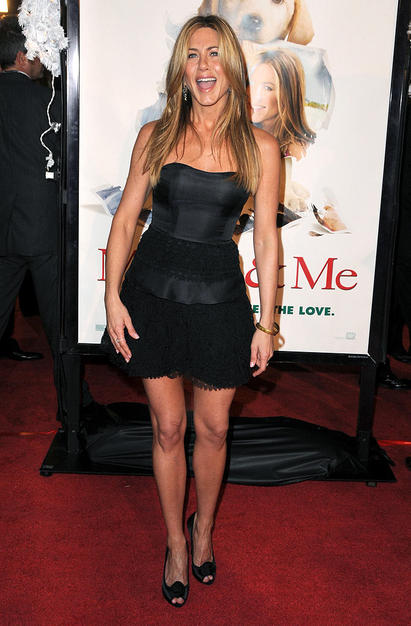
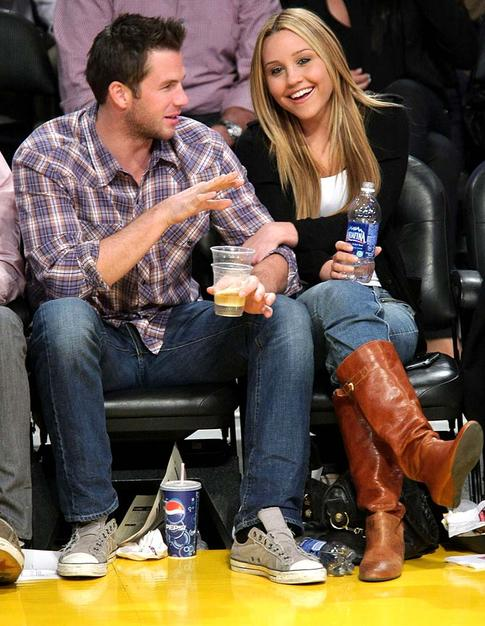

Jennifer Aniston turned heads in her little black dress at Thursday's "Marley & Me" premiere. But it was the 39-year-old's nearly nude GQ cover that had everyone talking ... and reading. In the interview, Jennifer reveals that while she speaks with her ex-husband Brad Pitt on occasion, she does not communicate with his current partner Angelina Jolie.

Angelina Jolie and Brad Pitt were all smiles at Monday's premiere of "The Curious Case of Benjamin Button." Angelina donned a gorgeous black Versace gown while Brad chose a classic tux.

Amanda Bynes and her new beau Doug Reinhardt kept thing casual at Wednesday's Lakers game. The 22-year-old actress told Cosmopolitan, I never want to get married. I feel trapped with the idea of marriage.